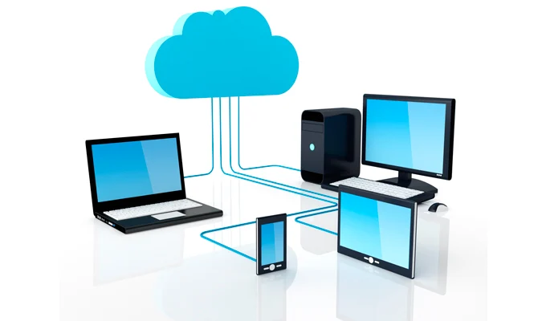
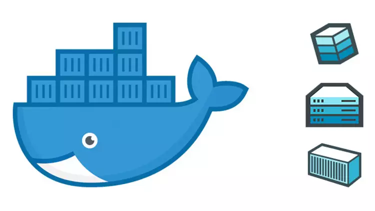

Virtualización de Alto Rendimiento

Implementamos hipervisores como Proxmox o VMware. Optimiza tu hardware al máximo nivel profesional con entornos totalmente aislados y altamente eficientes.
Conoce a fondo todo lo que podemos hacer por la infraestructura de tu empresa.

Implementamos hipervisores como Proxmox o VMware. Optimiza tu hardware al máximo nivel profesional con entornos totalmente aislados y altamente eficientes.
Blindamos toda tu red perimetral. Realizamos auditorías periódicas para protegerte contra amenazas externas, malware e intrusiones no deseadas.
Usamos herramientas como Zabbix o Grafana. Anticípate a cualquier fallo antes de que afecte a la continuidad de tu negocio mediante alertas en tiempo real.

Desplegamos aplicaciones modernas. Gestión de microservicios mediante Docker Compose y Kubernetes utilizando redes privadas para máxima seguridad.
Tus datos son lo más importante. Programación de backups incrementales y cifrados con un plan estricto de recuperación ante desastres (Disaster Recovery).
Especialistas en sistemas Open Source. Instalación, hardening de seguridad en distribuciones Debian/RHEL y automatización mediante scripts de Bash.